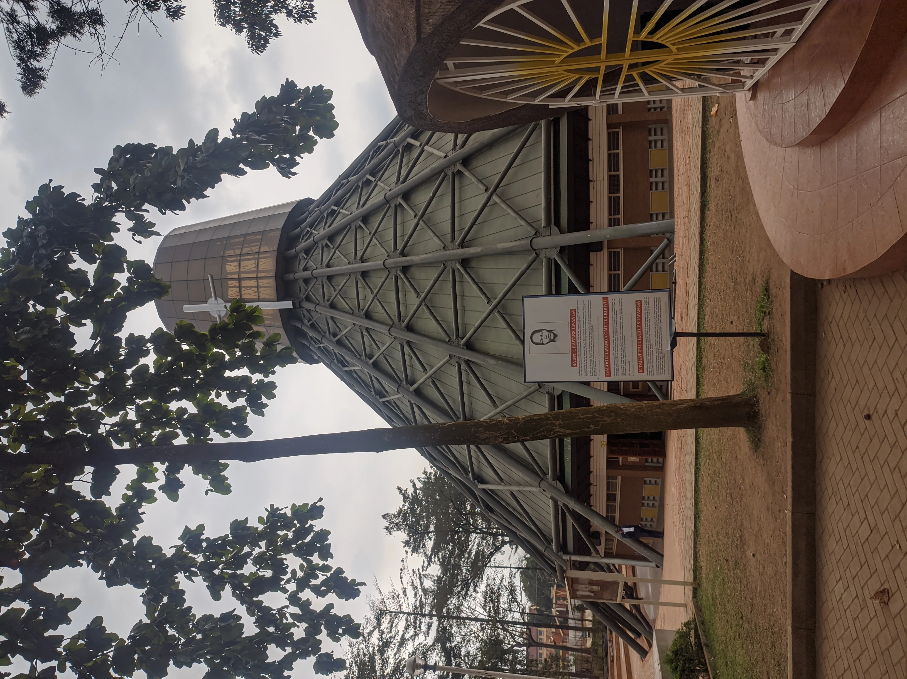

Namugongo Martyrs Shrine carries a seriousness that can be felt before it is fully explained. The site is spacious, but the emotion it holds is concentrated. Visitors arrive because of faith, history, curiosity, remembrance, or some combination of all four, and the atmosphere reflects that layered purpose.
What gives Namugongo its power is not only the story of martyrdom itself, but the fact that the place remains active in the spiritual life of so many people. It is not a memorial sealed in the past. It continues to gather devotion, pilgrimage, and reflection.
That living dimension is what makes the shrine meaningful for travelers. It allows them to witness belief as practice, not only as history.
Why Pilgrimage Sites Feel Different
A pilgrimage site changes travel posture. People speak differently, move differently, and hold the place with more attention. That emotional discipline gives Namugongo a dignity that visitors can feel even if they arrive knowing little of the full story.
It becomes a space that invites humility rather than spectacle.
History And Faith Work Together Here
The shrine matters because it links memory to belief. The historical events carry gravity, but the ongoing devotion around them gives the site continuity and force. That combination helps travelers understand why Namugongo occupies such an important place in Uganda's national and religious imagination.
It is one of the clearest examples of history staying alive through community.
Why It Belongs In A Wider Uganda Journey
Travelers often come to Uganda for scenery and wildlife, but places like Namugongo deepen the trip by revealing the country's spiritual and historical textures. They make Uganda feel fuller, not just more interesting.
For readers seeking meaningful stops near Kampala, Namugongo offers depth that goes far beyond a standard landmark visit.